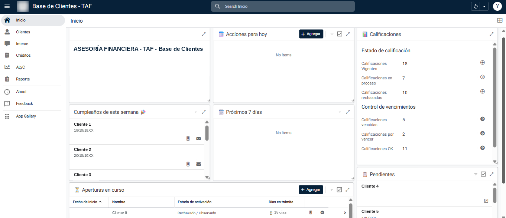
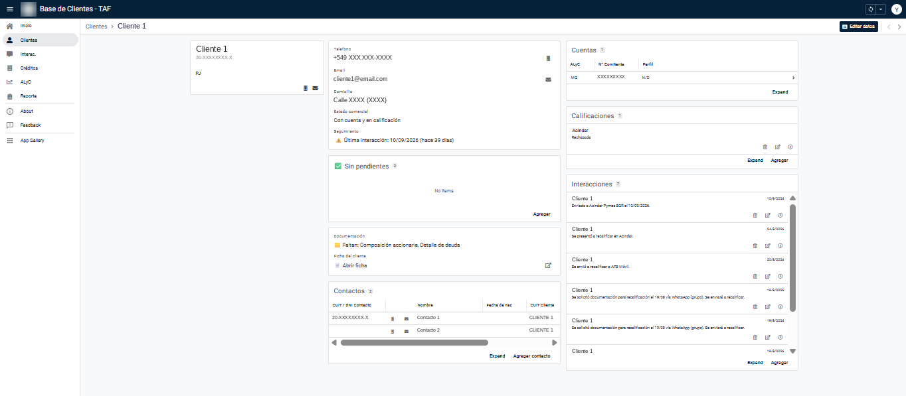
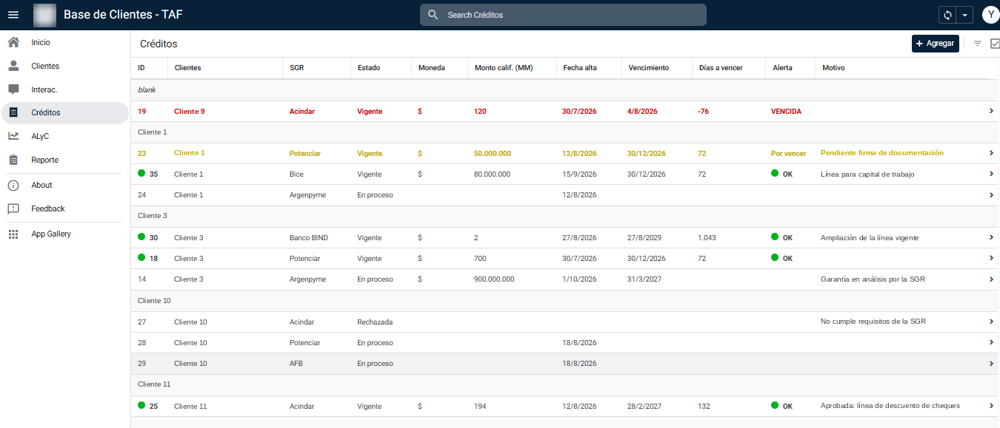
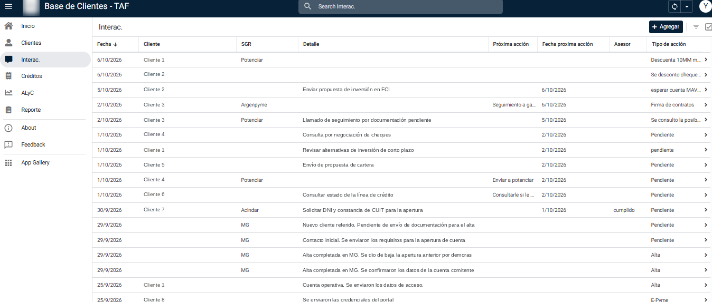
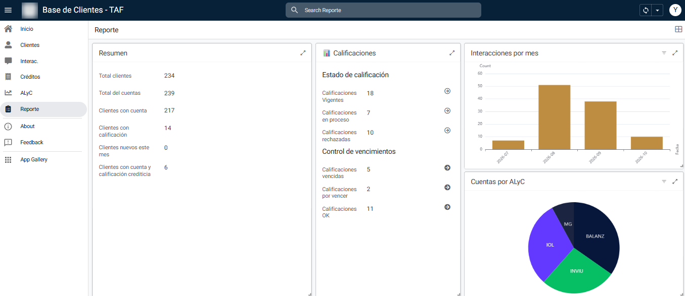

Proyecto freelance
Base de datos y app de gestión de clientes
Centralización de la cartera de clientes, las calificaciones crediticias y la documentación de una asesoría financiera, en una app de uso interno que el equipo usa en el día a día.
El punto de partida
La asesoría trabaja con cuentas comitentes en 4 ALyC y gestiona calificaciones crediticias ante SGR y entidades. Tenía su información en varios archivos separados, que no estaban conectados entre sí:
Para tener la foto completa de un cliente, controlar vencimientos o saber qué documentación faltaba había que revisar a mano archivo por archivo. El objetivo fue conectar lo que ya existía y sumar una herramienta simple para el día a día.
Lo que desarrollé
modelo relacional
compu y celular
- Base de datos: 9 tablas conectadas por CUIT, con una tabla maestra que consolida las fuentes sin duplicar registros.
- Aplicación: tablero diario, ficha única por cliente, formularios con validaciones y panel de reportes.
- Automatización: un script que cada noche lee las fichas de Drive y deja en la app lo que le falta a cada cliente.
La aplicación
Es una herramienta de uso interno: solo la usa el equipo de la asesoría. La pantalla de inicio muestra de un vistazo lo que hay que hacer en el día: pendientes, agenda, cumpleaños de la semana, aperturas de cuenta en curso e indicadores de calificaciones.

Cada cliente tiene una ficha con sus datos, contacto directo, última interacción, pendientes, documentación faltante, cuentas y calificaciones. La carga se hace desde la app, con validaciones de CUIT y teléfono, y control de duplicados.

Calificaciones y seguimiento
Cada calificación calcula sola los días que faltan para vencer y se marca con una alerta de color:

Cada contacto con un cliente queda registrado con su próxima acción, que alimenta sola la agenda. Las tareas se cierran con un toque sin perder el historial.

Automatización de la documentación
Un script en Apps Script recorre cada noche las carpetas de los clientes, lee sus fichas (aunque tengan formatos distintos) y guarda qué documentos faltan. Los casos dudosos, como fichas sin CUIT, quedan registrados para que el equipo los revise.
Trabajo con el equipo
El proyecto se construyó por etapas, ajustando con el feedback del equipo durante el uso real.
El alta de clientes pasó de dos botones a una sola pregunta, “¿qué viene a hacer el cliente?”, que es como piensa quien está cargando.
Resultado
La asesoría pasó de trabajar con archivos separados a una sola herramienta con toda la cartera, que el equipo usa a diario. Vencimientos, faltantes y agenda se calculan solos, y la estructura permite sumar nuevas vistas y reportes sin rehacer nada.
